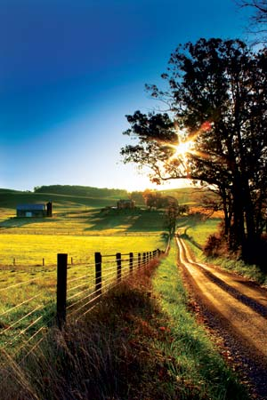
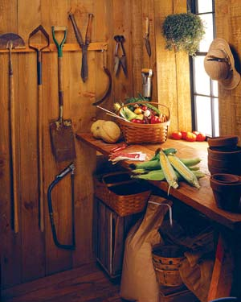
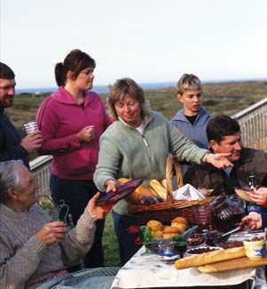
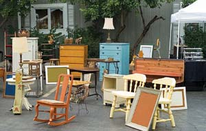
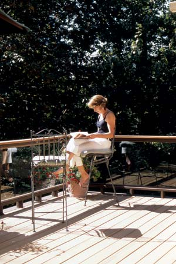
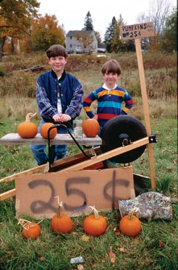
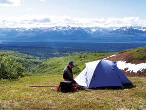

For many of us, the idea of simpler living has a lot of appeal. “Stressed,” “stretched,” “time-starved” and “cluttered” describe the frantic condition of so many lives today. No doubt about it, Americans have grown weary of the work-spend-consume treadmill; and a growing number of us are recognizing that consumerism and its counterpart, materialism, are inherently unsatisfying, and are casting about for alternative value systems.
Tim Kasser, who holds a doctorate in psychology and wrote The High Price of Materialism, explains that genuinely happy people express “intrinsic values” through self-exploration and self-acceptance, by maintaining close personal relationships and developing “community feeling.” In contrast, those who exhibit “extrinsic values” associated with the pursuit of wealth, status and image tend to display narcissistic behavior, to be less empathetic, have lower self-esteem and have lifestyles that are less eco-friendly. Even at middle school age, materialistically oriented students are “less likely to do relatively simple things (for the environment) like turn off lights when no one is looking,” Kasser says, “and less likely to reuse stuff.”
So if you want to get on the track toward happiness - while lowering your carbon footprint - all roads lead to simple living. The simplicity table stands on four legs - environmental stewardship, thoughtful consumption, community involvement and financial responsibility - and strengthening one leg bolsters the others. For instance, when you decide to start commuting on the bus, you’ll save money, build community and become a better environmental steward, all in one. To get started, here are a few ideas for achieving a simpler lifestyle:
Try TV-free living. Disconnect and reconnect. This probably sounds strange coming from me, the host of a television series, but I decided to go TV-free. Most evenings, my 11-year old son and I enjoy a leisurely dinner (outside in good weather), read, garden, play chess and talk.
Frugality factor: In 2005, the average cable bill was $43 per month. In a year, that adds up to $516.
Consider one vehicle. If you own two vehicles, try scaling back to one to save money and decrease carbon emissions. Consider selling or donating your spare and shifting to public transportation, carpooling, biking or walking. An obvious solution is scheduling shared use of the family vehicle. It’s not as hard as you may think.
Minneapolis resident Matt Hendricks bikes 25 minutes daily to his job, leaving the family’s one (paid-for) vehicle with his wife and their daughter. “It’s a commute, workout and some recreation all rolled into one,” Hendricks says. “If we had two car payments, we probably could not own our home.”
Frugality factor: In 2008, the estimated cost of owning one vehicle, including financing, insurance, maintenance, fuel and tax is more than $8,000 a year - and growing as gas prices continue to rise.
Live below your means. A sure way to weather turbulent times while working to secure your financial future is to live below your means. If you save and stash 10 percent (or more) of every dollar that comes your way, as the years pass, your savings will start to become substantial. If you’re game for ratcheting up this savings campaign, try to save 100 percent of a pay raise or bonus. Another ambitious technique, for a couple, is to live on one income and save the other.
Frugality factor: Every tightwad knows that 10 percent of even small amounts quickly adds up to a bundle.
Buy used. Vehicles, clothing, tools and toys - whenever possible, take advantage of tremendous savings by purchasing gently used goods. Even items such as appliances may drop in price enormously once they’re taken from the storeroom floor. But be sure to inspect the merchandise thoroughly before you swipe your card or count your bills, as most used items are sold “as is.” Also, consider swapping items or re-purposing what you have. I transformed my mother’s favorite 1960s novelty skirt into kitchen curtains, which are full of personality and flair.
Frugality factor: You can save up to 100 percent when you swap or buy used. Some people will even give you things for the effort of carting them off. For free things, check out freecycle.
Choose local food. Whenever possible, buy locally grown food rather than trucked-in, long-distance food. Shop at farmers markets; buy a share in a CSA (community supported agriculture); and consider planting a garden of your own. Even if you live in an apartment, you can make a container garden by setting out a few pots of peppers or cherry tomatoes on your patio or deck. (Learn more in Container Cultivation. )
Frugality factor: Especially with food prices rising, you can save money by feeding your family in-season organic produce, especially if it’s from your garden. And you can’t put a price tag on the pride of ownership!
Create community. The decline of community life and personal bonds is one of the worst changes of the last 20 years. According to one recent study, fully one-quarter of Americans have no one in whom they can confide, more than double the number who responded similarly in 1985. Cecile Andrews, author of Slow is Beautiful: New Visions of Community, Leisure and Joie de Vivre (New Society, 2006), counters this trend with a “stop and chat” program in her Seattle neighborhood. To build bonds with others, Cecile and her husband Paul consciously make small talk with neighbors and try to engage with newcomers. “When you speak to a stranger, you learn to care for the ‘other,’ a step toward caring for something greater than yourself, ” she says.
Frugality factor: Building community boosts your health by providing vital human connections that research shows are central to our well-being. Good health saves money. What’s more, human connections may pay off in unexpected ways. For instance, by engaging in community life, you may bump into a realtor who passes along a tip about a desirable property.
Build local economies. One of the most crucial things you can do to build community bonds while strengthening your local infrastructure is to vote with your dollars by buying local, even though sometimes you may pay more. “The most important set of things we can do right now is to re-localize our economies in profound ways,” says author and climate change activist Bill McKibben. Shopping locally also fosters relationships with merchants, which will benefit you in the long-run.
Frugality factor: Short-term, the payoff of local trade may be hard to see. But you’ll help keep companies in business, keeping your economy - and thus your community - on its feet.
Keep a journal. Active reflection is what the soul needs to stay in shape. Journal writing is a way of keeping in touch with yourself. It provides an active forum for contemplation and a written record for future recollection of where your soul has been. Reading past entries helps you trace your journey, recall your former self, and reflect on the future.
Frugality factor: It’s the cheapest form of therapy. The only cost is your time and the price of a notebook and pen.
Reconnect to nature. In our busy, wired lives, it can be all too easy to lose touch with nature - the grandeur of the outdoors that can uplift and soothe us, and helps promote physical and emotional health. Nature provides refuge and offers us a feeling of freedom, fantasy and sanctuary. Richard Louv, author of Last Child in the Woods: Saving Our Children from Nature-Deficit Disorder, makes the case that not just children need an active connection to nature, a sense of play and physicality in the outdoors, in order to be attuned to their humanity. “Even as we grow more separate from nature,” Louv writes, “we continue to separate from one another physically.” A business leader I know in Greensboro, N.C., makes Friday his outdoor day by walking to work and even holding his business meetings while walking with colleagues.
Frugality factor: The good news about the outdoors is that it’s still legal, and free, to exercise, garden, picnic and bird-watch outdoors. Don’t consider this wasted time; it may be the most valuable thing you do in a day.
De-clutter. Today we live with an unprecedented number of possessions - so many things that they’re overwhelming our drawers and closets and migrating into storage spaces. But experts warn that there’s a strong connection between physical clutter and mental clutter. “For most people, the more clutter you have, the more depressed you’re likely to feel,” says Cindy Glovinsky, certified psychotherapist and author of Making Peace with the Things in Your Life (2002, St. Martin’s). But de-cluttering is easier said than done. To prevent getting overwhelmed, try to de-clutter a small space every day, even just a countertop.
Once you get a handle on your clutter, adopt a new habit: scrutinize every item you bring into your home. And when you bring in something new, try to donate or re-purpose something old.
Frugality factor: De-cluttering is absolutely free. And you may unearth some treasures that you can sell for hard cash, or swap for something you do need. Check out freecycle or ITEX to get started in the world of swapping and bartering. You can also create your own barter arrangement locally by simply asking around. I asked the local music store about used pianos, and ended up connecting with a man who lives two doors down from me and no longer had room for his piano.
Choose not-so-big homes. Next time you move, consider downsizing into what noted architect and author Sarah Susanka calls a “not-so-big” house. The trend in new home construction over the past several decades has been larger living spaces accommodating smaller families. Heating, cooling and furnishing these McMansions increases your costs and carbon footprint. My friend Carol Holst, co-director of the national nonprofit Simple Living America, lives happily in a studio apartment in Glendale, Calif. “I live with the greatest richness because I’m not bogged down by cleaning, dusting and caring for things,” she says.
Frugality factor: Money savings here is a no-brainer. With a smaller space to heat, cool, furnish and clean, you free up significant resources for other aspects of your life.
As you move in the direction of simple living, don’t expect change to happen overnight. Instead, focus on one arena of lifestyle simplification and work on that first. You might decide to devote the summer to transform your family’s food choices. Stay with this and get comfortable before moving on to the next category. And if you slip up or backtrack, treat yourself as gently as the kindest teacher would a young student.
|
 PAT & CHUCK BLACKLEY When was the last time you took a stroll down a quiet country lane? |
 LARRY LEFEVER/GRANT HEILMAN PHOTOGRAPHY Growing your own food is deeply satisfying. |
 RICK WETHERBEE Whatever your age, you can build stronger social bonds by spending time with your family and neighbors. |
|
 REB/FOTOLIA You can hold a yard sale to de-clutter your home and make money - or shop them to save. |
 RICK WETHERBEE Remember reading? Getting away from the television can give you all kinds of time for more satisfying activities. |
 LYNN KARLIN Shopping at local farm stands is a great way to meet farmers and enjoy the countryside. |
|
 SETH RUNDLE Mother Earth News Art Director Matthew Stallbaumer enjoys the simpler life while camping in Alaska. |
|
|